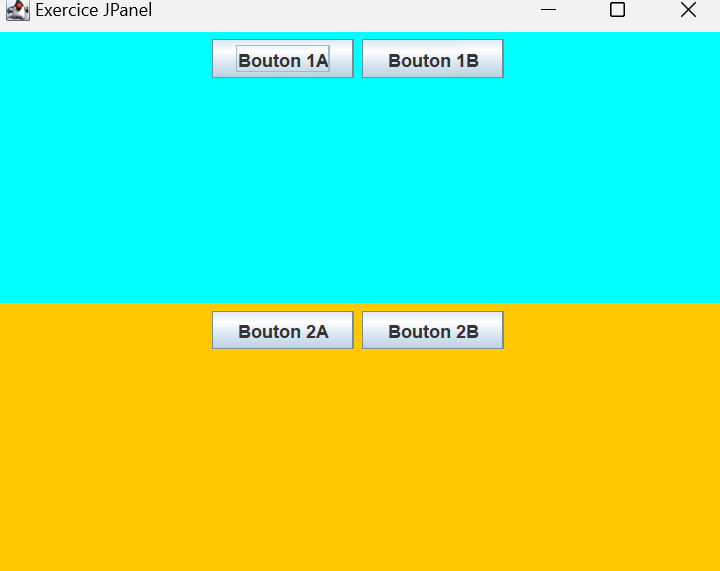

JPanel – Organiser l’interface graphique
JPanel est un conteneur Swing qui permet d’organiser et de regrouper les composants graphiques à l’intérieur d’une fenêtre.
Pourquoi utiliser JPanel ?
Ajouter directement des composants dans un JFrame
n’est pas une bonne pratique.
JPanel permet de structurer l’interface
et de mieux organiser le code.
- Organisation claire de l’interface
- Facilité d’ajout de composants
Création d’un JPanel :
import javax.swing.*;
public class Main {
public static void main(String[] args) {
JFrame frame = new JFrame("Exemple JPanel");
frame.setSize(400, 300);
frame.setDefaultCloseOperation(JFrame.EXIT_ON_CLOSE);
JPanel panel = new JPanel();
frame.add(panel);
frame.setVisible(true);
}
}
new JPanel(): crée un conteneur.panel.add(): ajoute des composants.frame.add(panel): ajoute le panel à la fenêtre.
Ajouter des composants dans un JPanel
JPanel panel = new JPanel();
JButton btn1 = new JButton("OK");
JButton btn2 = new JButton("Annuler");
panel.add(btn1);
panel.add(btn2);
Par défaut, JPanel utilise
FlowLayout :
les composants sont placés de gauche à droite.
Propriétés importantes de JPanel
| Méthode | Description |
|---|---|
add(Component) |
Ajoute un composant au panel |
setLayout(LayoutManager) |
Définit le mode d’organisation |
setBackground(Color) |
Change la couleur du fond |
Exemple complet
JFrame frame = new JFrame("Panel Exemple");
frame.setSize(400, 200);
frame.setDefaultCloseOperation(JFrame.EXIT_ON_CLOSE);
JPanel panel = new JPanel();
panel.add(new JLabel("Nom :"));
panel.add(new JTextField(10));
panel.add(new JButton("Valider"));
frame.add(panel);
frame.setVisible(true);
JFrame contient des JPanel,
et les JPanel contiennent les composants.
Exercice
Objectif : créer plusieurs JPanel avec des couleurs différentes et ajouter des boutons
personnalisés.
- Créer une fenêtre
JFramede taille 500x400. - Ajouter 2 JPanel à la fenêtre, chacun avec un
setBackground(Color)différent. - Dans chaque
JPanel, ajouter 2 boutonsJButtonavec un texte différent pour chacun. - Utiliser un layout simple (
FlowLayoutouGridLayout) pour organiser les boutons dans chaque panel. - Rendre la fenêtre visible avec
setVisible(true).
💡 Astuce : Pour que vos panels s’affichent correctement dans la fenêtre, pensez à
définir un layout pour la JFrame, par exemple :
frame.setLayout(new GridLayout(2, 1));Cette ligne permet de placer les deux panels l’un au-dessus de l’autre.
